Back to real.
The social network where everything is captured live and verified on the spot. Nothing generated, nothing uploaded.
Get inAndroid and iPhone · Private beta. Got an invite? Start here.
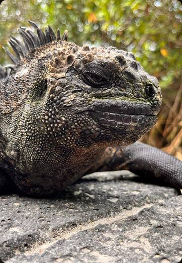
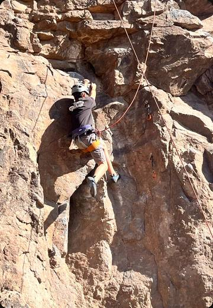
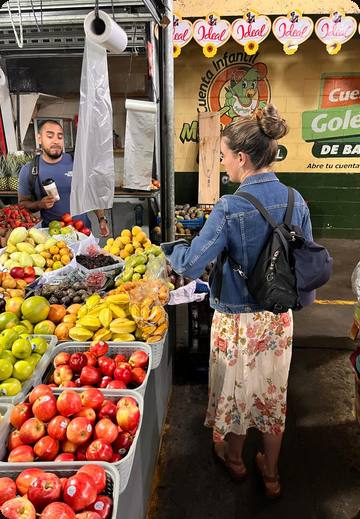
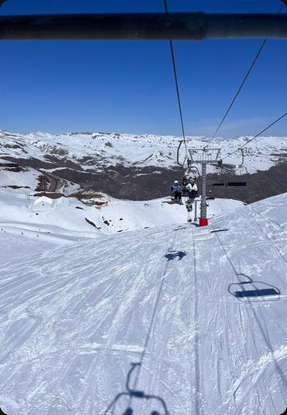
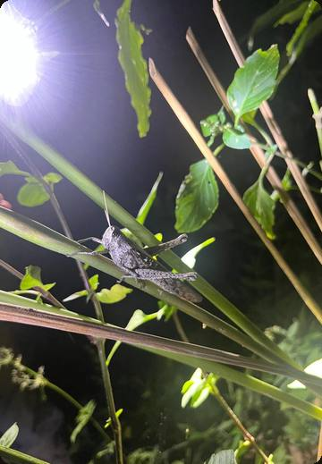
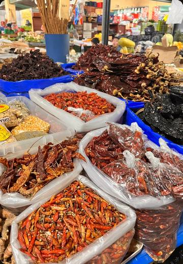
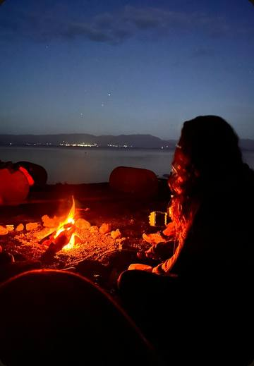
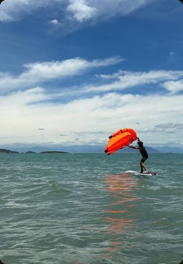
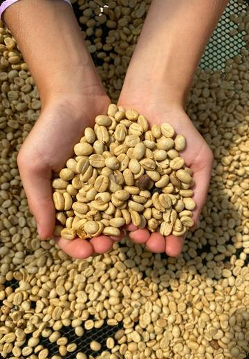
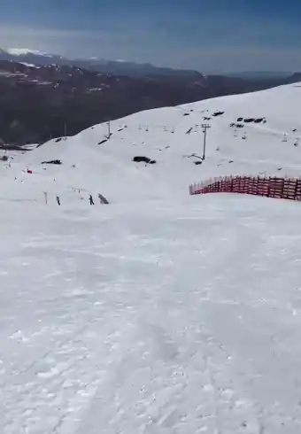
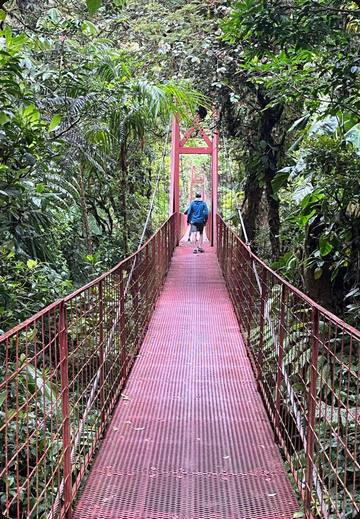
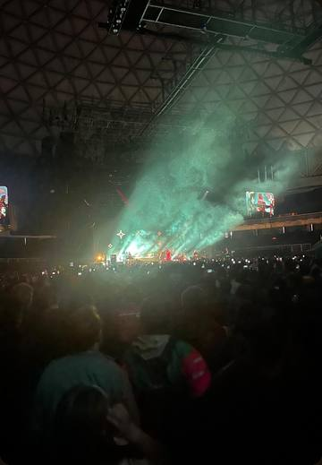
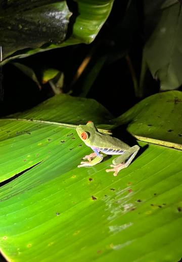
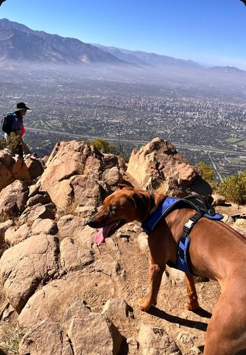
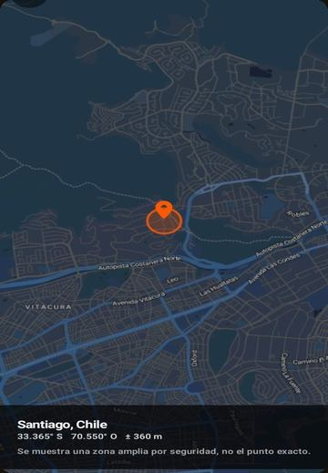
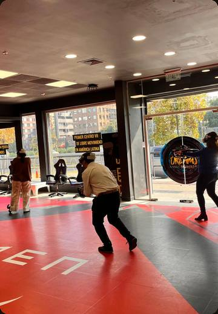
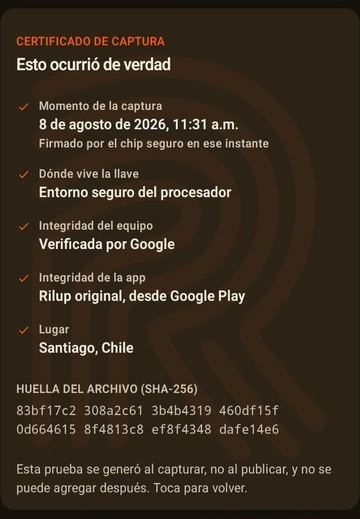
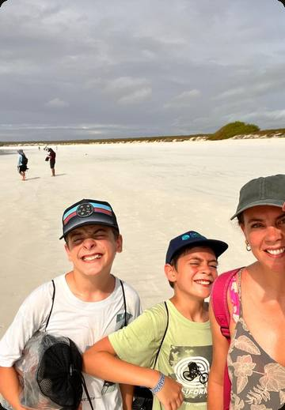
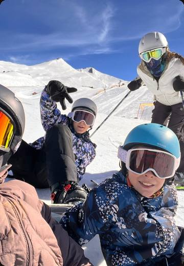
Why Rilup exists
Something is getting lost.
Not because the world got less amazing. Because we stopped believing it.
You see a perfect wave, a kid playing Chopin, an aurora over the mountains, a portrait that looks like a photo, and the first thing you think is “must be AI”. In that second, the merit of someone who spent years training, or months studying, failing and starting over, dissolves against something that came out of a prompt in thirty seconds. The process was the hard part, and it stopped counting.
Rilup exists to give you back that second of wonder, and to give the process its merit back.
How it feels
Four things that make it different.
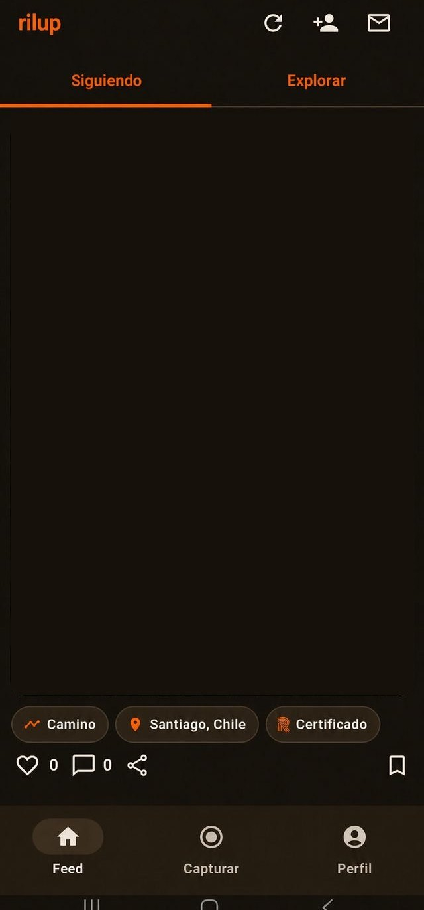
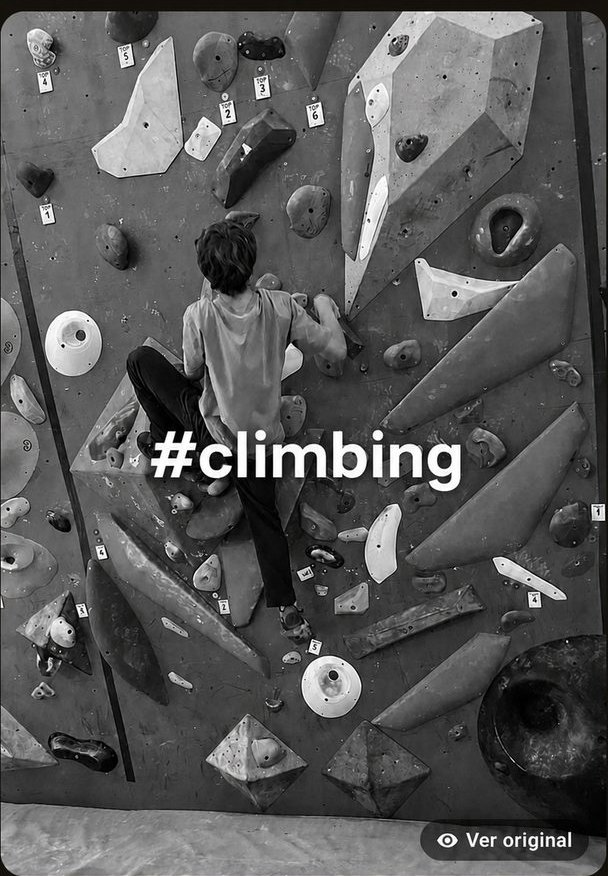
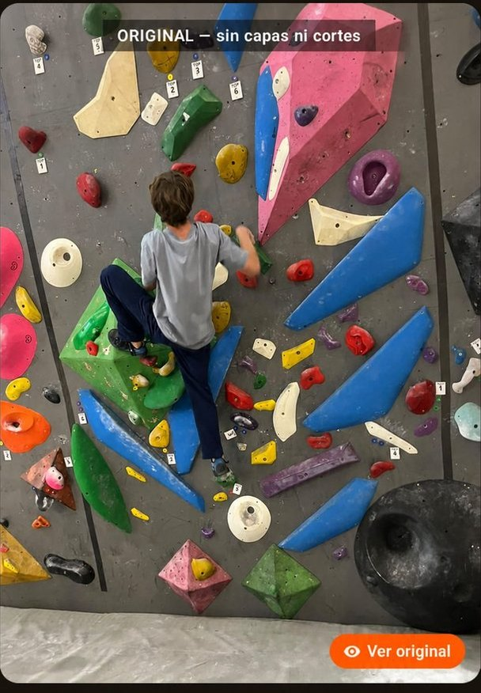
Press and hold the photo
Text, cuts and the look fall away, and what is left is the capture exactly as it left the sensor. It works on anyone's post, not only yours. Nobody can hide what they did to an image.
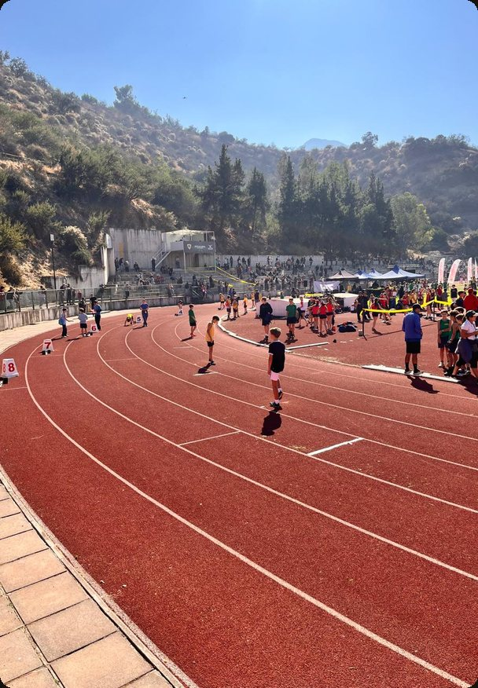
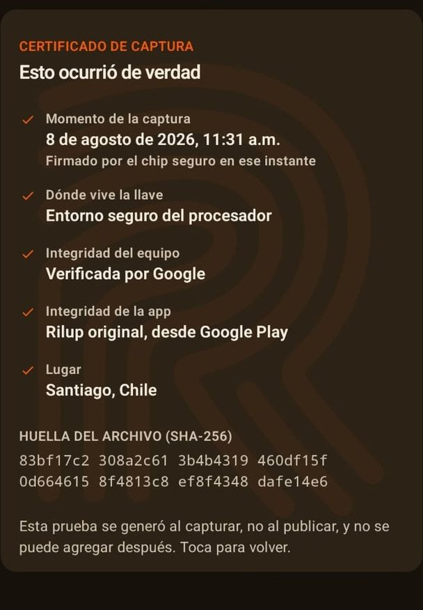
Tap Certificate
The post flips over. On the back: when it was captured, where the key that signed it lives, what Google or Apple said about the device and the app, and the fingerprint of the file.
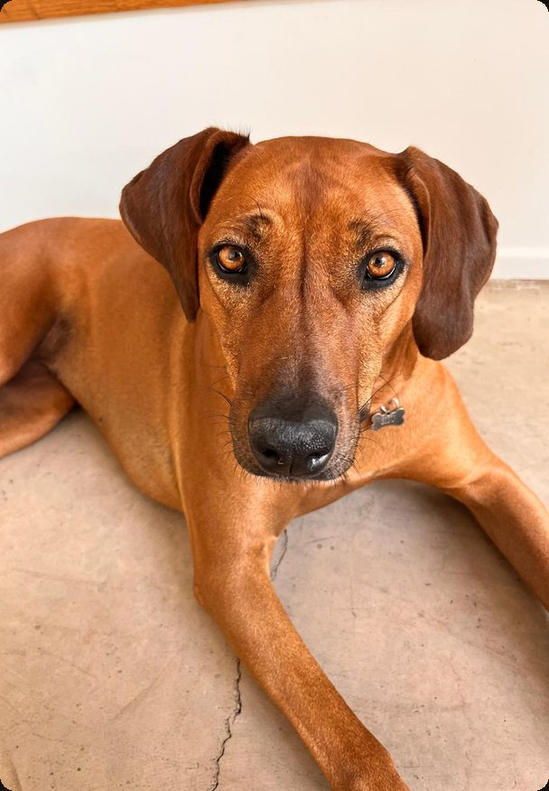
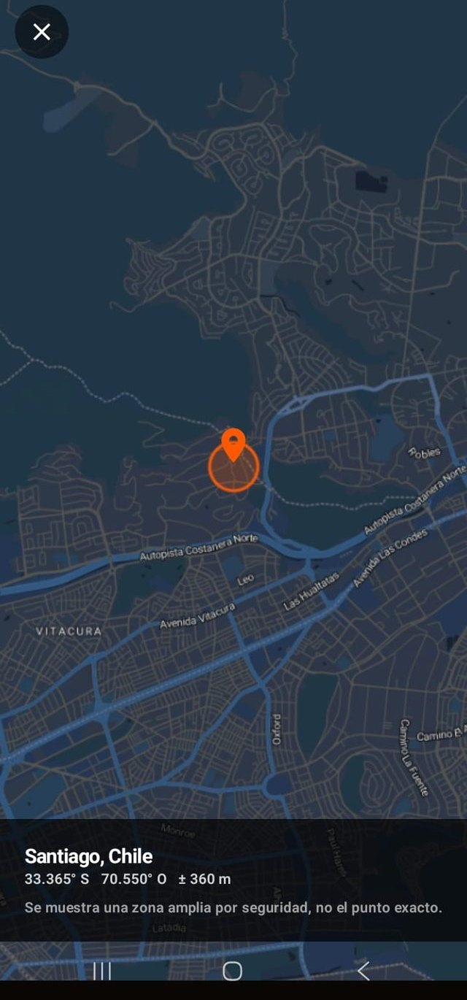
Tap the place
On every post you choose whether to show the place. And if you do, it is never an exact point: it is a wide area, blurred on purpose for your safety. Enough to know it happened there, and no more.
Open the path
The photo shrinks into a reel where you can see everything that person has published, in order. Because merit almost never fits in a single photo.
What you will find
People doing things. For real.
And something you will not find anywhere else
What happened, with its date and its place.
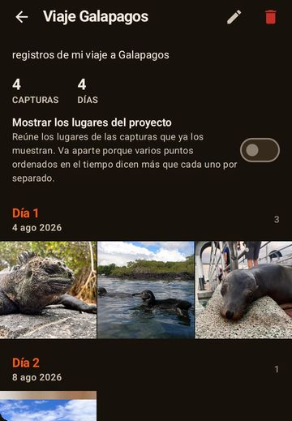
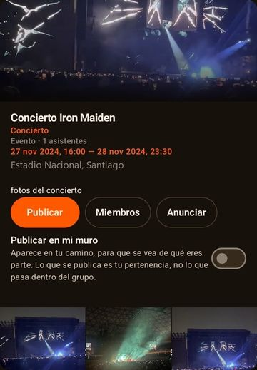
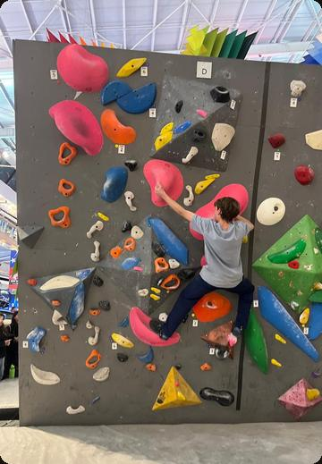
The difference
Here, incredible becomes credible again.
Everything published on Rilup is captured live, with the in-app camera, and sealed at that very instant. No camera roll, no “upload file”, nothing brought in from outside.
And because every layer you add (cuts, text, the look) is stored separately, anyone can press and hold View original and see the capture exactly as it left the sensor. No makeup.
Who it is for
For people who want the real thing.
For anyone tired of watching incredible things without knowing if they happened. Who wants to learn from someone who actually knows, see a place they could actually go, follow a person who actually exists.
And for the people who do those things. The piano prodigy. The gymnast. The climber. The craftsman who makes in eight hours what a machine fakes in eight seconds.
Some find what they were looking for. The others stop having to prove it.
The manifesto
And when something amazes you…
…you can trust that someone, for real, did it.
Join
Rilup is in private beta.
Leave your email and we will tell you when it opens. If you want in early and are willing to help us break it, tick the tester box.
Thank you!
Thank you for backing this so early. Rilup is built by one person, so every email on this list really counts.
Back to real.
Get inAndroid and iPhone · Private beta. Got an invite? Start here.